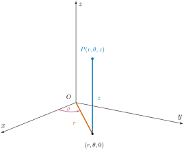

Section2.6Triple Integrals in Cylindrical Coordinates
Previously, we learned how to calculate triple integrals in rectangular coordinates. Today, we will learn triple integrals in cylindrical coordinates, which can be used to evaluate volumes of solids or to integrate a function over a region in space. We will see that when there is symmetry about an axis, it is more convenient to use cylindrical coordinates to calculate a triple integral.
Cylindrical coordinates \((r,\theta,z)\) are the combination of polar coordinates \((r,\theta)\) in the \(xy\)-plane and the \(z\)-coordinate of Cartesian coordinates; see Figure 2.6.1. Thus, adding \(z\) to (2.3.1), the relations between Cartesian and cylindrical coordinates are
\begin{equation}
x = r\cos\theta, \qquad y = r\sin\theta, \qquad z = z,\tag{2.6.1}
\end{equation}
\begin{equation*}
r^2 = x^2 + y^2, \qquad \tan\theta = \frac{y}{x}, \qquad z = z.
\end{equation*}

Figure2.6.1.A point \(P(r,\theta,z)\) in cylindrical coordinates: \((r,\theta)\) are the polar coordinates of its projection \((r,\theta,0)\) into the \(xy\)-plane, and \(z\) is its usual height.
Before calculating triple integrals in cylindrical coordinates, we need to figure out the volume element \(dV\) in this new set of coordinates. Remember from (2.4.1) that the area element \(dA\) in polar coordinates is \(r\,dr\,d\theta\text{.}\) Stack it through a height \(dz\text{,}\) and write down the cylindrical volume element. (The applet below builds the element one edge at a time; check your answer against the three edge lengths.)
Use the three sliders to build the volume element one edge at a time. The \(dr\) slider sets the radial thickness of the block, the \(d\theta\) slider opens its angular width, and the \(dz\) slider raises its height. Start with all three small, then increase them in turn. The edges controlled by \(dr\) and \(dz\) are straight segments of exactly those lengths, but the edge swept out by \(d\theta\) is a circular arc of length \(r\,d\theta\)—it grows in proportion to the block’s distance \(r\) from the \(z\)-axis. Slide \(d\theta\) alone and watch that curved edge lengthen while the radial and vertical edges stay fixed.
\begin{equation*}
D = \left\{(r,\theta)\ \middle|\ \alpha\le\theta\le\beta,\
h_1(\theta) \le r \le h_2(\theta)\right\}.
\end{equation*}
Then the iterated integral (2.5.3), written as \(\iiint_E f\,dV
= \iint_D\big[\int_{u_1}^{u_2} f\,dz\big]dA\text{,}\) can be converted to cylindrical coordinates:
Subsection2.6.2The Mass of a Solid With Axial Symmetry
Example2.6.2.Example I.
A solid \(E\) lies within the cylinder \(x^2 + y^2 = 1\text{,}\) below the plane \(z = 4\text{,}\) and above the paraboloid \(z = 1 - x^2 - y^2\text{.}\) Given that the density of the solid at any point is proportional to its distance from the axis of the cylinder, find the mass of the solid.
Solution. (Begin by plotting the region, shown in Figure 2.6.3. Write the cylinder and the paraboloid in cylindrical coordinates, and describe \(E\) with \(z\) running from the paraboloid up to the plane. Turn the description of the density into a formula — distance from the axis is a familiar quantity in these coordinates. Then compute the mass by (2.5.1) and (2.6.3), and compare with Figure 2.6.4.)
Figure2.6.3.The solid of Example 2.6.2: inside the cylinder \(x^2+y^2 = 1\text{,}\) above the paraboloid \(z = 1 - x^2 - y^2\text{,}\) and below the plane \(z = 4\text{.}\)
The way a column of the solid runs from the paraboloid floor up to the plane \(z = 4\text{,}\) and how it sweeps around the axis, is animated in Figure 2.6.4.
Figure2.6.4.Animation of the cylindrical setup for Example 2.6.2. A column at \((r,\theta)\) runs from the paraboloid floor up to the plane \(z = 4\text{,}\) and sweeps through the solid as \(\theta\) goes around the axis, illustrating \(dV = r\,dz\,dr\,d\theta\text{.}\)
Each part below describes a solid by the surfaces that bound it. Set up a triple integral in cylindrical coordinates that gives its volume: the work is all in the limits, and (2.6.2) supplies the rest. Try each part from the description alone—the solution shows the solid, so you can check whether the picture in your head was the right one.
The volume of the region bounded above by the paraboloid \(z = 5-x^2-y^2\text{,}\) below by the plane \(z=0\text{,}\) and on the side by the cylinder \(x^2+y^2=4\text{.}\)
Drag the background to rotate the solid and compare it with the picture you formed from the description. Shift-drag or pinch to zoom, and use the reset icon in the corner to return to the original view.
Drag the background to rotate the solid and compare it with the picture you formed from the description. Shift-drag or pinch to zoom, and use the reset icon in the corner to return to the original view.
The volume of the region bounded above by the paraboloid \(z = \frac14\left(x^2+y^2\right)\text{,}\) below by the plane \(z=0\text{,}\) and on the side by the cylinder \(x^2+y^2=4\text{.}\)
Drag the background to rotate the solid and compare it with the picture you formed from the description. Shift-drag or pinch to zoom, and use the reset icon in the corner to return to the original view.
Drag the background to rotate the solid and compare it with the picture you formed from the description. Shift-drag or pinch to zoom, and use the reset icon in the corner to return to the original view.
Drag the background to rotate the solid and compare it with the picture you formed from the description. Shift-drag or pinch to zoom, and use the reset icon in the corner to return to the original view.
Drag the background to rotate the solid and compare it with the picture you formed from the description. Shift-drag or pinch to zoom, and use the reset icon in the corner to return to the original view.
Drag the background to rotate the solid and compare it with the picture you formed from the description. Shift-drag or pinch to zoom, and use the reset icon in the corner to return to the original view.
The volume of the region bounded above by the cone \(z = 5-\sqrt{x^2+y^2}\text{,}\) below by the plane \(z=0\text{,}\) and on the side by the cylinder \(x^2+y^2=4\text{.}\)
Drag the background to rotate the solid and compare it with the picture you formed from the description. Shift-drag or pinch to zoom, and use the reset icon in the corner to return to the original view.